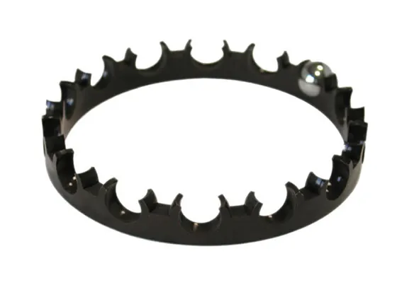

Gabbie in plastica per cuscinetti a sfera, stampate a Torino dal 1952
Resina acetalica e Nylon 66, nelle misure delle serie più diffuse e a disegno. Cercate il vostro cuscinetto: vedete la gabbia con le sue quote e chiedete il preventivo in un passaggio.
Nessuna gabbia a catalogo con queste misure. Le costruiamo anche a disegno: mandateci le quote.
Perché una gabbia in plastica al posto del metallo
- Si monta in un attimo e costa meno da assemblare.
- Dura a lungo ed è stabile alle alte e basse temperature.
- Nessuna energia persa per attrito, silenziosa anche a secco.
- Resiste a umidità, solventi, idrocarburi, acidi e basi deboli.
- Occupa meno spazio a magazzino.

Tappi e cappellotti di protezione
In polietilene, nel colore che scegliete voi. Proteggono filetti, connettori e estremità dei tubi in magazzino e in trasporto.
- Cappellotti di protezione
- Cappellotti per connettori
- Cappellotti per connettori rettangolari
- Tappi esagonali
- Tappi per estremità filettate di tubazioni
- Beccucci e prolunghe
Esperti del piccolo, da tre generazioni
Caldart nasce nel 1952 in via Peveragno 15, a Torino, e da allora è sempre lì. Prende il nome dal suo fondatore; dal 1977 è una s.n.c. Stampiamo materie plastiche per il settore meccanico, aeronautico e automobilistico, con una specialità: la gabbia distanziatrice dei cuscinetti a sfera, il particolare che a volte fa la differenza.
- 1952 Nasce la ditta in via Peveragno
- 1977 Diventa Caldart s.n.c.
- Oggi Clienti in Lombardia, Veneto e all'estero
Scriveteci le misure, vi rispondiamo con una proposta
Caldart s.n.c.
Via Peveragno 15, 10126 Torino
011 696 5253 telefono e fax
info@caldart.it
Ogni richiesta, anche su disegno, riceve un preventivo personalizzato.